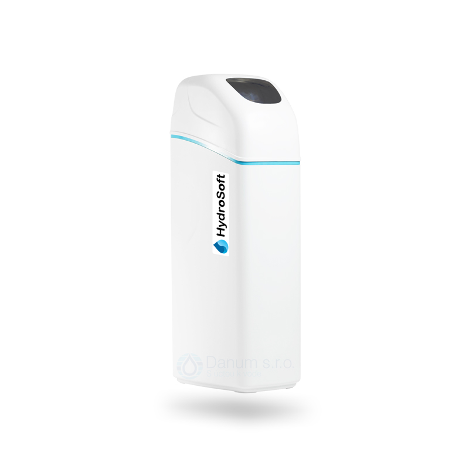
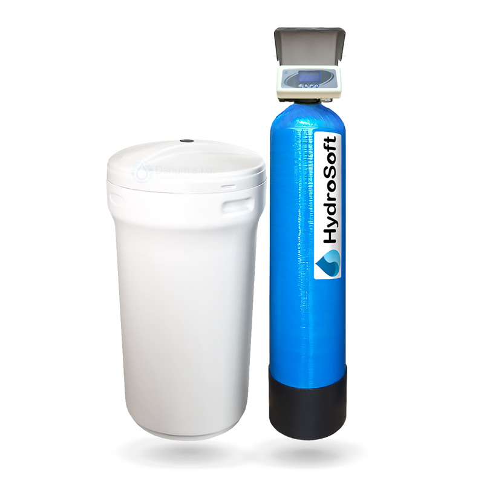
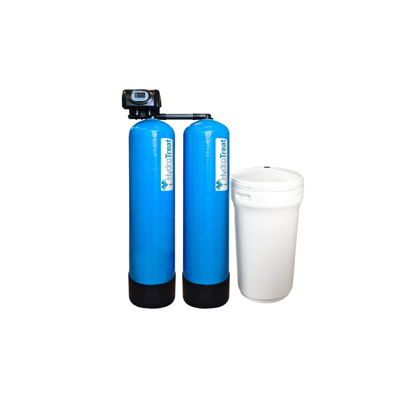

Úprava vody
Úpravu vody môžeme rozdeliť do troch základných kategórii a to pre domácnosti, studničné vody a pre priemysel. V domácnostiach sa najčastejšie upravuje tvrdosť vody aby sa ochránili spotrebiče ako kotle, bojleri, batérie a pod. Pri studničných vodách je to hlavne odstraňovanie železa, mangánu, zákalu a pod. Pre priemysel sa upravuje voda pre technické účely – zmäkčovanie, výroba demineralizovanej vody…
Zmäkčovač vody HydroSoft COMFORT Maxi zabezpečuje efektívne centrálne riešenie pre úpravu tvrdej vody. Zariadenie typu MAXI je vhodné pre väčšie domácnosti (max. pre 5-6 osoby).
Jednomodulové komerčné zmäkčovače vody HydroSoft sú vybavené automatickou riadiacou hlavou, ktorá riadi proces regenerácie na základe objemu pretečenej vody.
Dvojmodulové priemyselné zmäkčovače vody HydroSoft sú určené pre také prípady, kde zákazník potrebuje upraviť vyššie prietoky alebo si nemôže dovoliť prestávku v dodávaní upravenej vody, ktorá je zapríčinená regeneráciou..
 Vodné systémy SCALE FREE SYSTEM
fungujúce na revolučnej technológii slúžia na zabránenie usadzovania vodného kameňa. Tento
systém
nevyžaduje elektrické pripojenie, ani pripojenie na kanalizáciu, z vody nič neodoberá, ani
nepridáva, vďaka tomu je táto technológia veľmi úsporná a ekologická.
SFS zabraňuje nielen usádzanie vodného kameňa, ale aj odstraňuje už usadený vodný kameň. K
dodržaniu
prietokov sa pevne odporúča zapojenie obmedzovača prietoku.
Technológia EMI
je najnovším výsledkom vedeckého výskumu z oblasti úpravy vody s elektromagnetickými impulzmi.
EMI je patentovaná technológia vyvinutá výrobcom Dropson, ktorá zlúči všetky dôležité
kombinované parametre k zabráneniu tvorby vodného kameňa v inovatívnej koncepcii. Dropson EMI
vytvorí z vápnika a horčíka mikrokryštály, ktoré sa nemôžu usadiť na žiadnom povrchu v takejto
podobe. Pretekajú armatúrami bez toho, aby sa usadzovali a vypúšťajú sa cez vodovodné kohútiky a
kanály. Pri každej vykryštalizácii uhličitanu vápenatého sa vytvorí molekula oxidu uhličitého.
Táto slabá kyselina postupne uvoľní usadeniny vodného kameňa z povrchu potrubia.
Galvanická úprava vody
Trinity Scale Protection – galvanická úprava vody eliminuje tvorbu vodného kameňa a odstráni
staré usadeniny v potrubiach a v prietokových zariadeniach.
Táto galvanická úprava vody funguje na princípe reaktoru zinkových katiónov, neodoberá minerálne
látky z vody, ale transformuje kalcit CaCo3 na aragonit CaCo3. Tieto minerály majú rovnaké
chemické zloženie, ale odlišnú minerálnu štruktúru. Zmenia tvar kalcita z ihličkovej formy na
guľovitý aragonit, ktorý má 15 násobný objem oproti kalcitu a tým stráca schopnosť usadzovať sa
na stenách potrubí a sú v rámci distribúcie vody vyplavované z potrubia.
UV sterilizátor vody je zariadenie navrhnuté špeciálne za účelom zneškodnenia škodlivých mikroorganizmov vo vode pochádzajúcej z neupravovaných zdrojov, ako napríklad vlastná studňa, potok, povrchová voda. Škodlivé mikroorganizmy ako sú baktérie, vírusy a prvoky sú častou príčinou črevných problémov, hnačiek, ale aj iných omnoho závažnejších zdravotných komplikácií. UV lampy sú bežne inštalované vlastníkmi domov, ktorí obdržali výsledok rozboru vody pozitívny na škodlivé mikroorganizmy, rovnako ako tými, ktorí majú dôvod sa domievať, že sú vystavení vyššiemu riziku takejto kontaminácie, ale tiež tými, ktorí chcú mať jednoducho istotu, že ich voda je náležite dezinfikovaná pred samotnou konzumáciou.
Demineralizačné zariadenia a mobilné demineralizačné jednotky od HydroTreat
Úplné odsolenie vody / výroba demivody s hmotou MIXBED Pure
Tieto filtračné zariadenia so živicou MIXBED Pure sú určené na demineralizáciu a deionizáciu
vody k výrobe demivody. Pri správnom použití je možné dosiahnuť veľmi nízku vodivosť. Okrem toho
sú vhodné na deionizáciu s vysokou účinnosťou pre priemyselné a domáce aplikácie. Doporučujeme
používať po predchádzajúcej úprave vody reverznou osmózu. Mobilná demineralizačná jednotka
HydroTreat DEMI 18 a DEMI MINI slúžia na demineralizáciu napúšťacej vody pre vykurovacie a
chladiace systémy s možnosťou riadeného miešanie vstupnej a demineralizovanej vody.
Ak sa vyčerpá kapacita demineraizačnej náplne, starú nádrž stačí vrátiť a my Vám ju vymeníme za
novú náplň.
Pieskové filtre na odstránenie zakalenia vody
Pieskové filtračné zariadenia HydroTreat sú určené na odstránenie zakalenia, pre vysokoefektívnu
filtráciu surovej vody od mechanických nečistôt a organických zvyškov pomocou kremičitého
piesku.
Pre dosiahnutie efektívnejšieho výsledku sa odporúča piesok filtračného zariadenia ročne alebo
dvojročne (podľa používania, zrnitosti a kvality vody) vymieňať.
Filtračné zariadenia HydroTreat s multifunkčnou hmotou ECOMIX-C
Filtračné zariadenie HydroTreat s špeciálnou hmotou ECOMIX sú komplexným filtračným riešením pre
obmedzenie alebo odstránenie tvrdosti vody, železa, mangánu, organického znečistenia a mnohých
iónov (amoniak) z vody.
PUhlíkové filtre pre zlepšenie kvality vody
Filtre HydroTreat s aktívnym uhlím absorbujú nečistoty z vody pri jej priechode hmotou.
Používajú sa na obmedzenie alebo odstránenie nežiaduceho zápachu, chuti, organických zlúčenín a
zvyškov chlóru. Uhlíkové filtre tiež odstraňujú niektoré potenciálne nebezpečné znečistenia a
chemikálie, ako napr. plynný radón, sírovodík, mnohé rozpustené organické chemikálie a
trihalometány.
Filtrácia železa a mangánu z vody
Filtračné zariadenia s hmotou Pyrolox Advantage účinne filtrujú železo a mangán. Pri dimenzovaní
treba zohľadniť hodnotu pH. Pre efektívnejšiu filtráciu sa odporúča dávkovať dezinfekčný
prostriedok do vodovodného systému vrátane reakčnej nádoby, aby filtračná hmota mohla zachytiť
častice vyrážaného železa a mangánu. Hmota je odolná voči chlóru.
Priemyselné mechanické filtre rôznych veľkostí a prevedení, veľký výmer
jemnosti
filtrácie. Presný výber filtra na mieru podľa požiadaviek technológie.
Pohárové, diskové a potrubné filtre s automatickým priplachom rôznych prevedení